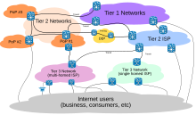
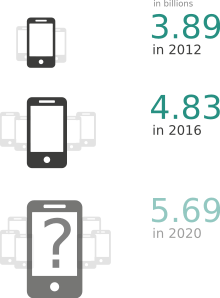
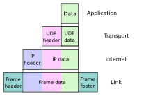

Internet service providers (ISPs) establish the worldwide connectivity between individual networks at various levels of scope. End-users who only access the Internet when needed to perform a function or obtain information, represent the bottom of the routing hierarchy. At the top of the routing hierarchy are the tier 1 networks, large telecommunication companies that exchange traffic directly with each other via very high speed fiber-optic cables and governed by peering agreements. Tier 2 and lower-level networks buy Internet transit from other providers to reach at least some parties on the global Internet, though they may also engage in peering. An ISP may use a single upstream provider for connectivity, or implement multihoming to achieve redundancy and load balancing. Internet exchange points are major traffic exchanges with physical connections to multiple ISPs. Large organizations, such as academic institutions, large enterprises, and governments, may perform the same function as ISPs, engaging in peering and purchasing transit on behalf of their internal networks. Research networks tend to interconnect with large subnetworks such as GEANT, GLORIAD, Internet2, and the UK's national research and education network, JANET.
Common methods of Internet access by users include dial-up with a computer modem via telephone circuits, broadband over coaxial cable, fiber optics or copper wires, Wi-Fi, satellite, and cellular telephone technology (e.g. 3G, 4G). The Internet may often be accessed from computers in libraries and Internet cafés. Internet access points exist in many public places such as airport halls and coffee shops. Various terms are used, such as public Internet kiosk, public access terminal, and Web payphone. Many hotels also have public terminals that are usually fee-based. These terminals are widely accessed for various usages, such as ticket booking, bank deposit, or online payment. Wi-Fi provides wireless access to the Internet via local computer networks. Hotspots providing such access include Wi-Fi cafés, where users need to bring their own wireless devices, such as a laptop or PDA. These services may be free to all, free to customers only, or fee-based. Grassroots efforts have led to wireless community networks. Commercial Wi-Fi services that cover large areas are available in many cities, such as New York, London, Vienna, Toronto, San Francisco, Philadelphia, Chicago and Pittsburgh, where the Internet can then be accessed from places such as a park bench.[68] Experiments have also been conducted with proprietary mobile wireless networks like Ricochet, various high-speed data services over cellular networks, and fixed wireless services. Modern smartphones can also access the Internet through the cellular carrier network. For Web browsing, these devices provide applications such as Google Chrome, Safari, and Firefox and a wide variety of other Internet software may be installed from app stores. Internet usage by mobile and tablet devices exceeded desktop worldwide for the first time in October 2016.[69] Mobile communication Number of mobile cellular subscriptions 2012–2016 The International Telecommunication Union (ITU) estimated that, by the end of 2017, 48% of individual users regularly connect to the Internet, up from 34% in 2012.[70] Mobile Internet connectivity has played an important role in expanding access in recent years, especially in Asia and the Pacific and in Africa.[71] The number of unique mobile cellular subscriptions increased from 3.9 billion in 2012 to 4.8 billion in 2016, two-thirds of the world's population, with more than half of subscriptions located in Asia and the Pacific. The number of subscriptions was predicted to rise to 5.7 billion users in 2020.[72] As of 2018, 80% of the world's population were covered by a 4G network. [72] The limits that users face on accessing information via mobile applications coincide with a broader process of fragmentation of the Internet. Fragmentation restricts access to media content and tends to affect the poorest users the most.[71] Zero-rating, the practice of Internet service providers allowing users free connectivity to access specific content or applications without cost, has offered opportunities to surmount economic hurdles but has also been accused by its critics as creating a two-tiered Internet. To address the issues with zero-rating, an alternative model has emerged in the concept of 'equal rating' and is being tested in experiments by Mozilla and Orange in Africa. Equal rating prevents prioritization of one type of content and zero-rates all content up to a specified data cap. In a study published by Chatham House, 15 out of 19 countries researched in Latin America had some kind of hybrid or zero-rated product offered. Some countries in the region had a handful of plans to choose from (across all mobile network operators) while others, such as Colombia, offered as many as 30 pre-paid and 34 post-paid plans.[73] A study of eight countries in the Global South found that zero-rated data plans exist in every country, although there is a great range in the frequency with which they are offered and actually used in each.[74] The study looked at the top three to five carriers by market share in Bangladesh, Colombia, Ghana, India, Kenya, Nigeria, Peru and Philippines. Across the 181 plans examined, 13 percent were offering zero-rated services. Another study, covering Ghana, Kenya, Nigeria and South Africa, found Facebook's Free Basics and Wikipedia Zero to be the most commonly zero-rated content.
The Internet standards describe a framework known as the Internet protocol suite (also called TCP/IP, based on the first two components.) This is a suite of protocols that are ordered into a set of four conceptional layers by the scope of their operation, originally documented in RFC 1122 and RFC 1123. At the top is the application layer, where communication is described in terms of the objects or data structures most appropriate for each application. For example, a web browser operates in a client–server application model and exchanges information with the Hypertext Transfer Protocol (HTTP) and an application-germane data structure, such as the HyperText Markup Language (HTML). Below this top layer, the transport layer connects applications on different hosts with a logical channel through the network. It provides this service with a variety of possible characteristics, such as ordered, reliable delivery (TCP), and an unreliable datagram service (UDP). Underlying these layers are the networking technologies that interconnect networks at their borders and exchange traffic across them. The Internet layer implements the Internet Protocol (IP) which enables computers to identify and locate each other by IP address and route their traffic via intermediate (transit) networks.[76] The Internet Protocol layer code is independent of the type of network that it is physically running over. At the bottom of the architecture is the link layer, which connects nodes on the same physical link, and contains protocols that do not require routers for traversal to other links. The protocol suite does not explicitly specify hardware methods to transfer bits, or protocols to manage such hardware, but assumes that appropriate technology is available. Examples of that technology include Wi-Fi, Ethernet, and DSL. As user data is processed through the protocol stack, each abstraction layer adds encapsulation information at the sending host. Data is transmitted over the wire at the link level between hosts and routers. Encapsulation is removed by the receiving host. Intermediate relays update link encapsulation at each hop, and inspect the IP layer for routing purposes. Internet protocol Conceptual data flow in a simple network topology of two hosts (A and B) connected by a link between their respective routers. The application on each host executes read and write operations as if the processes were directly connected to each other by some kind of data pipe. After the establishment of this pipe, most details of the communication are hidden from each process, as the underlying principles of communication are implemented in the lower protocol layers. In analogy, at the transport layer the communication appears as host-to-host, without knowledge of the application data structures and the connecting routers, while at the internetworking layer, individual network boundaries are traversed at each router. The most prominent component of the Internet model is the Internet Protocol (IP). IP enables internetworking and, in essence, establishes the Internet itself. Two versions of the Internet Protocol exist, IPv4 and IPv6. IP Addresses A DNS resolver consults three name servers to resolve the domain name user-visible "www.wikipedia.org" to determine the IPv4 Address 207.142.131.234. For locating individual computers on the network, the Internet provides IP addresses. IP addresses are used by the Internet infrastructure to direct internet packets to their destinations. They consist of fixed-length numbers, which are found within the packet. IP addresses are generally assigned to equipment either automatically via DHCP, or are configured.  However, the network also supports other addressing systems. Users generally enter domain names (e.g. "en.wikipedia.org") instead of IP addresses because they are easier to remember; they are converted by the Domain Name System (DNS) into IP addresses which are more efficient for routing purposes. IPv4 Internet Protocol version 4 (IPv4) defines an IP address as a 32-bit number.[76] IPv4 is the initial version used on the first generation of the Internet and is still in dominant use. It was designed to address up to ≈4.3 billion (109) hosts. However, the explosive growth of the Internet has led to IPv4 address exhaustion , which entered its final stage in 2011,[77] when the global IPv4 address alloca tion pool was exhausted. IPv6 Because of the growth of the Internet and the depletion of available IPv4 addresses, a new version of IP IPv6, was developed in the mid-1990s, which provides vastly larger addressing capabilities and more efficient routing of Internet traffic. IPv6 uses 128 bits for the IP address and was standardized in 1998.[78][79][80] IPv6 deployment has been ongoing since the mid-2000s and is currently in growing deployment around the world, since Internet address registries (RIRs) began to urge all resource managers to plan rapid adoption and conversion.[81] IPv6 is not directly interoperable by design with IPv4. In essence, it establishes a parallel version of the Internet not directly accessible with IPv4 software. Thus, translation facilities must exist for internetworking or nodes must have duplicate networking software for both networks. Essentially all modern computer operating systems support both versions of the Internet Protocol. Network infrastructure, however, has been lagging in this development. Aside from the complex array of physical connections that make up its infrastructure, the Internet is facilitated by bi- or multi-lateral commercial contracts, e.g., peering agreements, and by technical specifications or protocols that describe the exchange of data over the network. Indeed, the Internet is defined by its interconnections and routing policies